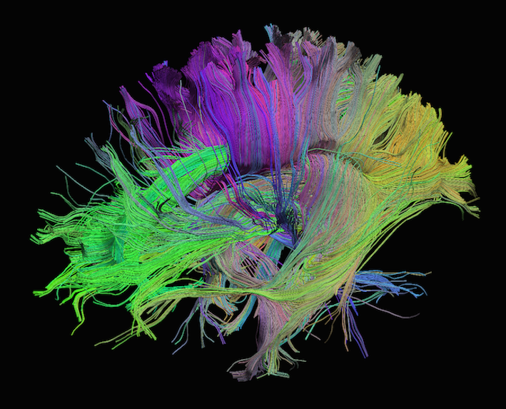
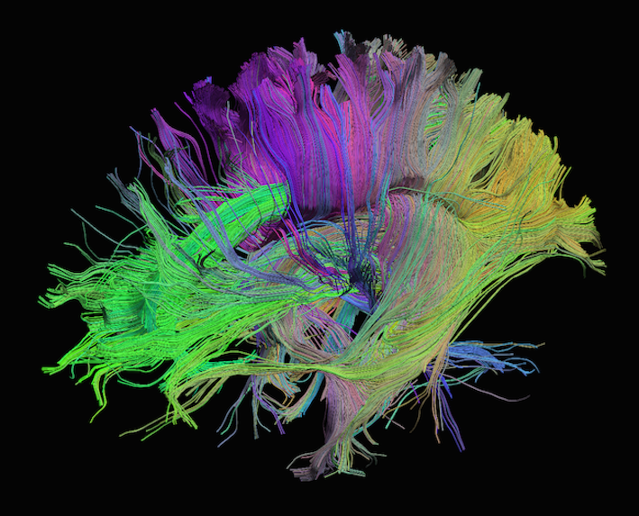

Working with MRI
Last updated on 2024-08-14 | Edit this page
Estimated time: 70 minutes
Overview
Questions
- What kinds of MRI are there?
- How are MRI data represented digitally?
- How should I organize and structure files for neuroimaging MRI data?
Objectives
- Show common kinds of MRI imaging used in research
- Show the most common file formats for MRI
- Introduce MRI coordinate systems
- Load an MRI scan into Python and explain how the data is stored
- View and manipulate image data
- Explain what BIDS is
- Explain advantages of working with Nifti and BIDS
- Show a method to convert from DICOM to BIDS/NIfTI
Introduction
This lesson is heavily based on existing lessons from Carpentries; namely:
- Introduction to Working with MRI Data in Python
- Introduction to dMRI
- Functional Neuroimaging Analysis in Python
We will not cover all the material from these lessons, but instead provide an overview of the key points.
Types of MR Scans
Anatomical

Sourced from https://case.edu/med/neurology/NR/MRI%20Basics.htm
- 3D images of anatomy
- Different tissue types produce different intensities
- Different sequences produce different intensities for various phenomena and tissues
Functional


Sourced from Wagner and Lindquist, 2015
- Reveals blood oxygen level-dependant (BOLD) signal
- Four dimensional image (x, y, z and time)
Diffusion
 

Sourced from http://brainsuite.org/processing/diffusion/tractography/
- Measures diffusion of water in order to model tissue microstructure
- Four dimensional images (x, y, z + direction of diffusion)
- Has parameters about the strength of the diffusion “gradient” and
its direction in
.bvaland.bvecfiles
Other Types of MRI
Perfusion weighted imaging includes relatively novel sequences such as dynamic contrast-enhanced MR perfusion, dynamic susceptibility contrast MR perfusion, and arterial spin labelled perfusion.
MRI can also be used for spectroscopy, but this will not be covered here as it does not produce traditional images.
Common MRI File Formats
| Format Name | File Extension | Origin/Group | More info |
|---|---|---|---|
| DICOM | none or .dc
|
ACR/NEMA Consortium | https://www.dicomstandard.org/ |
| Analyze |
.img/.hdr
|
Analyze Software, Mayo Clinic | https://eeg.sourceforge.net/ANALYZE75.pdf |
| NIfTI | .nii |
Neuroimaging Informatics Technology Initiative | https://brainder.org/2012/09/23/the-nifti-file-format/ |
| MINC | .mnc |
Montreal Neurological Institute | https://www.mcgill.ca/bic/software/minc |
| NRRD | .nrrd |
https://teem.sourceforge.net/nrrd/format.html |
From the MRI scanner, images are initially collected and put in the DICOM format but can be converted to these other formats to make working with the data easier.
In a later episode, we will delve deeper into DICOM data, which includes various information such as the patient’s name. In this episode, we will focus on accessing the images.
NIfTI is one of the most ubiquitous file formats for storing neuroimaging data. We can convert DICOM data to NIfTI using dcm2niix software.
We can learn how to run dcm2niix by taking a look at its
help menu:
One of the advaantages of working with dcm2niix is that
it can be used to create Brain Imaging Data Structure (BIDS) files,
since it outputs a NIfTI and a JSON with metadata ready to fit into the
BIDS standard. BIDS is a
widely adopted standard of how data from neuroimaging research can be
organized. The organization of data and files is crucial for seamless
collaboration across research groups and even between individual
researchers. Some pipelines assume your data is organized in BIDS
structure, and these are sometimes called BIDS Apps.
Some of the more popular examples are: - fmriprep -
freesurfer - micapipe - SPM -
MRtrix3_connectome
We recommend the BIDS starter-kit website for learning the basics of this standard.
Next, we’ll cover some details on working with NIfTI files.
Reading NIfTI Images
NiBabel is a Python package for reading and writing neuroimaging data. To learn more about how NiBabel handles NIfTIs, refer to the NiBabel documentation on working with NIfTIs, which this episode heavily references.
First, use the load() function to create a
NiBabel image object from a NIfTI file.
When loading a NIfTI file with NiBabel, you get a
specialized data object that includes all the information stored in the
file. Each piece of information is referred to as an
attribute in Python’s terminology. To view all these
attributes, simply type t2_img. followed by Tab.
Today, we’ll focus on discussing mainly two attributes
(header and affine) and one method
(get_fdata).
1. Header
It contains metadata about the image, including image dimensions, data type, and more.
OUTPUT
<class 'nibabel.nifti1.Nifti1Header'> object, endian='<'
sizeof_hdr : 348
data_type : b''
db_name : b''
extents : 0
session_error : 0
regular : b''
dim_info : 0
dim : [ 3 432 432 30 1 1 1 1]
intent_p1 : 0.0
intent_p2 : 0.0
intent_p3 : 0.0
intent_code : none
datatype : int16
bitpix : 16
slice_start : 0
pixdim : [1. 0.9259259 0.9259259 5.7360578 0. 0. 0.
0. ]
vox_offset : 0.0
scl_slope : nan
scl_inter : nan
slice_end : 29
slice_code : unknown
xyzt_units : 2
cal_max : 0.0
cal_min : 0.0
slice_duration : 0.0
toffset : 0.0
glmax : 0
glmin : 0
descrip : b'Philips Healthcare Ingenia 5.4.1 '
aux_file : b''
qform_code : scanner
sform_code : unknown
quatern_b : 0.008265011
quatern_c : 0.7070585
quatern_d : -0.7070585
qoffset_x : 180.81993
qoffset_y : 21.169691
qoffset_z : 384.01007
srow_x : [1. 0. 0. 0.]
srow_y : [0. 1. 0. 0.]
srow_z : [0. 0. 1. 0.]
intent_name : b''
magic : b'n+1't2_hdr is a Python dictionary, i.e. a
container that hold pairs of objects - keys and values. Let’s take a
look at all of the keys.
Similar to t2_img, in which attributes can be accessed
by typing t2_img. followed by Tab, you can do
the same with t2_hdr.
In particular, we’ll be using a method belonging to
t2_hdr that will allow you to view the keys associated with
it.
OUTPUT
['sizeof_hdr',
'data_type',
'db_name',
'extents',
'session_error',
'regular',
'dim_info',
'dim',
'intent_p1',
'intent_p2',
'intent_p3',
'intent_code',
'datatype',
'bitpix',
'slice_start',
'pixdim',
'vox_offset',
'scl_slope',
'scl_inter',
'slice_end',
'slice_code',
'xyzt_units',
'cal_max',
'cal_min',
'slice_duration',
'toffset',
'glmax',
'glmin',
'descrip',
'aux_file',
'qform_code',
'sform_code',
'quatern_b',
'quatern_c',
'quatern_d',
'qoffset_x',
'qoffset_y',
'qoffset_z',
'srow_x',
'srow_y',
'srow_z',
'intent_name',
'magic']Notice that methods require you to include () at the end of them whereas attributes do not. The key difference between a method and an attribute is:
- Attributes are variables belonging to an object and containing information about their properties or characteristics
- Methods are processes that belong to an object and are designed to perform actions involving the object’s attributes
When you type in t2_img. followed by Tab, you
may see that attributes are highlighted in orange and methods
highlighted in blue.
The output above is a list of keys you can use to
access values of t2_hdr. We can access the
value stored by a given key by typing:
Challenge: Extract Values from the NIfTI Header
Extract the value of ‘pixdim’ from t2_hdr.
2. Data
As you’ve seen above, the header contains useful information that
gives us information about the properties (metadata) associated with the
MR data we’ve loaded in. Now we’ll move in to loading the actual
image data itself. We can achieve this by using the method
called t2_img.get_fdata():
OUTPUT
array([[[0., 0., 0., ..., 0., 0., 0.],
[0., 0., 0., ..., 0., 0., 0.],
[0., 0., 0., ..., 0., 0., 0.],
...,
[0., 0., 0., ..., 0., 0., 0.],
[0., 0., 0., ..., 0., 0., 0.],
[0., 0., 0., ..., 0., 0., 0.]],
[[0., 0., 0., ..., 0., 0., 0.],
[0., 0., 0., ..., 0., 0., 0.],
[0., 0., 0., ..., 0., 0., 0.],
...,
[0., 0., 0., ..., 0., 0., 0.],
[0., 0., 0., ..., 0., 0., 0.],
[0., 0., 0., ..., 0., 0., 0.]],
...,
[[0., 0., 0., ..., 0., 0., 0.],
[0., 0., 0., ..., 0., 0., 0.],
[0., 0., 0., ..., 0., 0., 0.],
...,
[0., 0., 0., ..., 0., 0., 0.],
[0., 0., 0., ..., 0., 0., 0.],
[0., 0., 0., ..., 0., 0., 0.]]])The initial observation you might make is the prevalence of zeros in the image. This abundance of zeros might prompt concerns about the presence of any discernible content in the picture. However, when working with radiological images, it’s important to keep in mind that these images frequently contain areas of air surrounding the objects of interest, which appear as black space.
What type of data is this exactly in a computational sense? We can
determine this by calling the type() function on
t2_data:
OUTPUT
numpy.ndarrayThe data is a multidimensional array.
Challenge: Check Out Attributes of the Array
How can we see the number of dimensions in the t2_data
array? Once again, all of the attributes of the array can be seen by
typing t2_data. followed by Tab.
Challenge: Check Out Attributes of the Array (continued)
Remember typical 2D pictures are made out of pixels, but a 3D MR image is made up of 3D cubes called voxels.

What is the shape of the image?
The three numbers given here represent the number of values along
a respective dimension (x,y,z). This image was scanned in 30
slices, each with a resolution of 432 x 432 voxels. That means there are
30 * 432 * 432 = 5,598,720 voxels in total!
Let’s see the type of data inside of the array.
OUTPUT
dtype('float64')This tells us that each element in the array (or voxel) is a
floating-point number.
The data type of an image controls the range of possible intensities. As
the number of possible values increases, the amount of space the image
takes up in memory also increases.
OUTPUT
0.0
630641.0785522461For our data, the range of intensity values goes from 0 (black) to more positive digits (whiter).
To examine the value of a specific voxel, you can access it using its
indices. For example, if you have a 3D array data, you can
retrieve the value of a voxel at coordinates (x, y, z) with the
following syntax:
This will give you the value stored at the voxel located at the
specified index (x, y, z). Make sure that the indices are
within the bounds of the array dimensions.
To inspect the value of a voxel at coordinates (9, 19, 2), you can use the following code:
OUTPUT
0.This command retrieves and prints the intensity value at the specified voxel. The output represents the signal intensity at that particular location.
Next, we will explore how to extract and visualize larger regions of interest, such as slices or arrays of voxels, for more comprehensive analysis.
Working with Image Data
Slicing does exactly what it seems to imply. Given a 3D volume, slicing involves extracting a 2D slice from our data.
From left to right: sagittal, coronal and axial slices of a brain.
Let’s select the 10th slice in the z-axis of our data:
This is similar to the indexing we did before to select a single
voxel. However, instead of providing a value for each axis, the
: indicates that we want to grab all values from
that particular axis.
Challenge: Slicing MRI Data
Now try selecting the 20th slice from the y-axis.
Challenge: Slicing MRI Data (continued)
Finally, try grabbing the 3rd slice from the x-axis.
We’ve been slicing and dicing images but we have no idea what they look like. In the next section we’ll show you one way you can visualize it all together.
Visualizing the Data
We previously inspected the signal intensity of the voxel at
coordinates (10,20,3). Let’s see what out data looks like when we slice
it at this location. We’ve already indexed the data at each x-, y-, and
z-axis. Let’s use matplotlib:
PYTHON
import matplotlib.pyplot as plt
%matplotlib inline
slices = [x_slice, y_slice, z_slice]
fig, axes = plt.subplots(1, len(slices))
for i, slice in enumerate(slices):
axes[i].imshow(slice.T, cmap="gray", origin="lower")Now, we’re shifting our focus away from discussing our data to address the final crucial attribute of a NIfTI.
3. Affine
The final important piece of metadata associated with an image file is the affine matrix, which indicates the position of the image array data in a reference space.
Below is the affine matrix for our data:
OUTPUT
array([[-9.25672975e-01, 2.16410652e-02, -1.74031337e-05,
1.80819931e+02],
[ 2.80924864e-06, -3.28338569e-08, -5.73605776e+00,
2.11696911e+01],
[-2.16410652e-02, -9.25672975e-01, -2.03403855e-07,
3.84010071e+02],
[ 0.00000000e+00, 0.00000000e+00, 0.00000000e+00,
1.00000000e+00]])To explain this concept, recall that we referred to coordinates in our data as (x,y,z) coordinates such that:
- x is the first dimension of
t2_data - y is the second dimension of
t2_data - z is the third dimension of
t2_data
Although this tells us how to access our data in terms of voxels in a 3D volume, it doesn’t tell us much about the actual dimensions in our data (centimetres, right or left, up or down, back or front). The affine matrix allows us to translate between voxel coordinates in (x,y,z) and world space coordinates in (left/right, bottom/top, back/front). An important thing to note is that in reality in which order you have:
- Left/right
- Bottom/top
- Back/front
Depends on how you’ve constructed the affine matrix; thankfully there is in depth coverage of the issue the nibabel documentation For most of the the data we’re dealing with we use a RAS coordinate system so it always refers to:
- Right
- Anterior
- Superior
Here we must note a practical point. Radiologists and nuclear medicine specialists like to look at images in a certain layout. The patient’s right side will be on the physical left of the image. This is a display convention that is the opposite of how a lot of NIfTIs are set up by scientists. If you want your results to be used by actual medical specialists, you probably need to translate your images to thier conventions. Remember medical specialists may have to read hundreds of images a day, so they want thier process streamlined, not to worry about flipping around images so they can understand them.
Applying the affine matrix (t2_affine) is done by using
a linear map (matrix multiplication) on voxel coordinates
(defined in t2_data).

The concept of an affine matrix may seem confusing at first but essentially it allows us to figure out real world distances and locations.
If we want to know what the distances between these two voxels are in terms of real world distances (millimetres), this information cannot be derived from using voxel coordinates, and so we need the affine matrix.
NIfTI images, by definition, have an affine with the voxel
coordinates relating to the real world coordinates in RAS+ encoded
space. So here the affine matrix we’ll be using will be encoded in
RAS. That means once we apply the matrix our
coordinates are (Right, Anterior, Superior).
- In the R axis, positive values mean move right, negative values mean move left
- In the A axis, positive values mean move forward, negative values mean move posterior
- In the S axis, positive values mean move up, negative values mean move inferior
Increasing a coordinate value in the first dimension corresponds to moving to the right of the person being scanned, and so on.
Functional MRI Data
A fundamental difference between many MRI sequences and fMRI is the inclusion of a time dimension in fMRI. Essentially, fMRI captures a signal in each voxel of the imaged object over time. We can visualize this as shown below:

Unfortunately, any signal will contain some noise, and fMRI data is
inherently noisy, particularly due to head movements. While our primary
interest is in grey matter brain cells, signals from other cells and
structures can also be detected. Various filtering and processing
techniques are employed to clean up fMRI data. Despite the challenges in
interpreting this type of imaging, the effort has led to numerous
positive outcomes for the neuroimaging community. For example, fMRIPrep has set a
standard across new modalities, leading to the broader concept of nipreps. Notably,
fmriprep remains the go-to package for handling the
complexities of fMRI data processing.

Sourced from https://www.nipreps.org/
Nipreps and Beyond:
- There are many, many packages for medical image analysis
- There are known pre-built pipelines with possibilities in python
- Your pipeline will probably begin with cleaning and preparing data
- You can mix and match parts of pipelines with NiPype
If you are less interested in coding, but still need it to accomplish your research goals, it can be worthwhile to use packages that are well known, as it is easier to find various forms of documentation and help. For this reason NIlearn is a library to consider for fMRI data.
Advantages of NIlearn:
- Fully free and open source
- Extremely popular
- Allows Python coding
- Implementations of many state-of-the art algorithms
- Works on Nibabel objects
Diffusion MRI Data
Diffusion MRIs have additional data when compared to anatomical MRIs.
Diffusion sequences are sensitive to the signals from the random, microscropic motion (i.e. diffusion) of water protons. The diffusion of water in anatomical structures is restricted due to barriers (e.g. cell membranes), resulting in a preferred direction of diffusion (anisotropy). A typical diffusion MRI scan will acquire multiple volumes with varying magnetic fields which are sensitive to diffusion along a particular direction and result in diffusion-weighted images.
In addition to the acquired images, two files are collected as part
of the diffusion dataset, known as the b-vectors and b-values. The
b-value (file suffix .bval) is the diffusion-sensitizing
factor, and reflects the diffusion gradient timing and strength. The
b-vector (file suffix .bvec) corresponds to the direction
with which diffusion was measured. Together, these two files define the
diffusion MRI measurement as a set of gradient directions and
corresponding amplitudes, and are necessary to calculate useful measures
of the microscopic properties.
Just like fMRI, diffusion MRI data does not typically come off the scanner ready to be analyzed, as there can be many things that might need to be corrected before analysis. To illustrate what the preprocessing step may look like, here is an example preprocessing workflow from QSIPrep (Cieslak et al, 2020):

Depending open what you want to do with your imaging you may use a pre-contructed pipeline only, or you may want to code. A strong possible library for coding with diffusion images is the Diffusion Imaging in Python (DIPY) package.
Adantages of DIPY:
- Fully free and open source
- Allows Python coding
- Implementations of many state-of-the art algorithms
- Has methods for diffusion tensor imaging
- High performance with many algorithms actually implemented in Cython under the hood
Diffusion tensor imaging (DTI) is a technique that uses diffusion of water as a signal for axonal organization. Tractography is a group of techniques to visualize neural tracts using data collected by DTI.
Tractography
Tractography is a reconstruction technique used to visually represent neural fiber tracts using data collected by diffusion MRI. Tractography models axonal trajectories as ‘streamlines’ from local directional information. There are several families methods for tractopraphy. No known methods is exact and perfect, they all have biases and limitations. The streamlines generated by a tractography method and the required meta-data are usually saved into files called tractograms.
Key Points
- Imaging MRIs commonly used for research can be anatomical, functional or diffusion
- MRIs can be converted from DICOMs to NIfTIs
- BIDS is a standard about organizing neuroimaging data
- NIfTI images contain a header, which describes the contents, and the data
- The position of the NIfTI data in space is determined by the affine matrix
- NIfTI data is a multi-dimensional array of values
- Functional MRIs and Diffusion MRIs require heavy (pre)processing
- Functional MRIs have time dimension
- Diffusion MRI has b-values and b-vectors
- There are many various tractography methods, each with imperfections